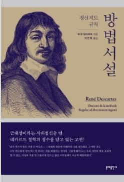

데카르트는 《방법서설》(1637)에서 철학을 맛보기로 다루었고, 1641년에
출판한《성찰(Meditations on First Philosophy, 원제: 제1철학에 관한 성찰)》
에서 무려 700쪽이 넘는 방대한 양으로 '주체성의 철학'을 다루었다.
《방법서설》의 첫 부분을 쉽게 쓴 것으로 보아서 《성찰》이라는 책도
읽어볼 만하다는 느낌을 받았다.
《방법서설》은 본래 500쪽이 넘는 분량이며 대부분 과학에 관한 논문이지만
철학적 방법에 관해서 논의한 앞의 78쪽 정도를 우리가 흔히 《방법서설》로
번역해서 읽고 있다. 그런데 글이 쉽다. '정신의 자서전' 이라고 불릴 만큼
자기가 진리를 추구해온 이야기를 나열하고 있기 때문에 누구나 읽을 수
있을 만큼 쉽다는 사실에 놀랐다. 이 책의 원래 제목은 '이성을 바르게
이끌고 여러 학문의 진리를 탐구하기 위한 방법서설 그리고 이 방법에
관한 에세이들인 굴절광학, 기상학 및 기하학'이다.